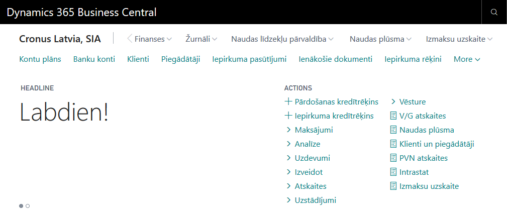
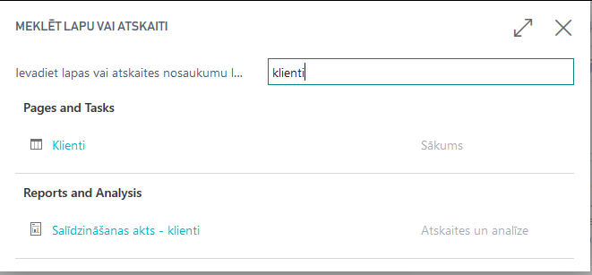
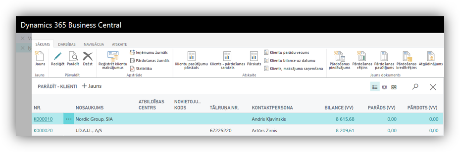
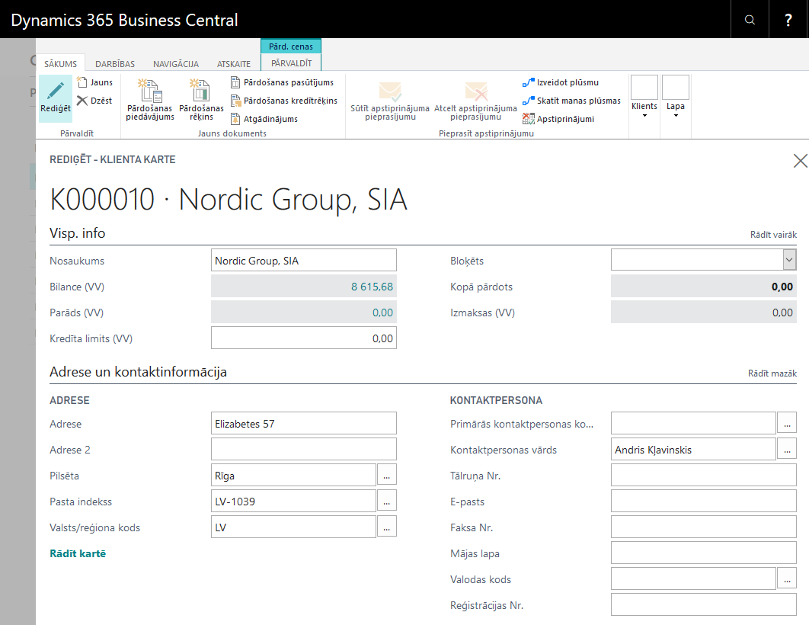

Key Usage Scenarios
Overview
Latvian language (Latvia) is a business software solution developed by Elva Baltic for companies that carry out business transactions in Republic of Latvia.
Latvian language (Latvia) is fully integrated with Dynamics 365 Business Central by providing translation of its interface and standard reports into the Latvian language.
Latvian language (Latvia) cannot be considered as translation tool for
- User entered information in Dynamics 365 Business Central
- Reports provided by other software solutions, that are integrated with Dynamics 365 Business Central
Walkthroughs provided enables the user to:
- Use Dynamics365 Business Central interface and standard reports into the Latvian language
Walkthrough: Select Latvian Language
About this walkthrough :
This walkthrough demonstrates the process for selecting Latvian language as the language of Dynamics 365 Business Central interface.
Roles : No specific user roles are required.
Story : You are Katrīna Pavlova, assigned by Cronus International to be a CFO in Cronus Latvia, SIA. The company runs business in the sphere of sales of furniture and rendering consultation services related to interior design upon request of local customers.
Cronus Latvia, SIA would like to use Dynamics 365 Business Central in Latvian language, in order to eliminate language barriers for local system users. Your task is to change interface language into Latvian.
Prerequisite : No specific prerequisites are required.
Steps :
- In the app bar upper right corner choose the user name, and then choose My Settings

- In the My Settings page, open the list of available languages

- In the Available languages page, select the Latvian (Latvia).

- Afterwards press the OK button and wait for the system to reload.

- Check whether the change of language was successful- view Business Central main page in the Latvian language

- Click on the button Search for Page or Report... and type Klienti.
Explore Business Central by using Latvian language for search

- Select Customer Card Nordic Group SIA from List of Customers.

Click on Customer No., in order to open Customer Card
Explore Customer Card by using Latvian language
